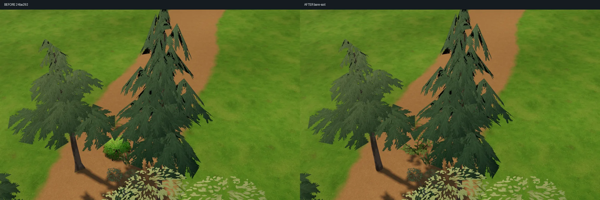
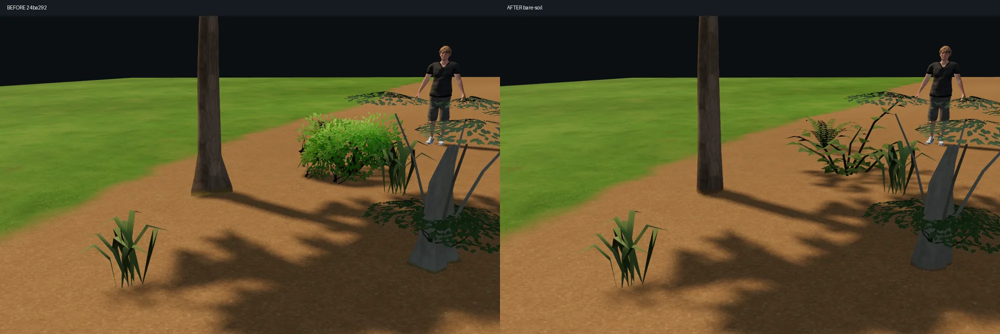
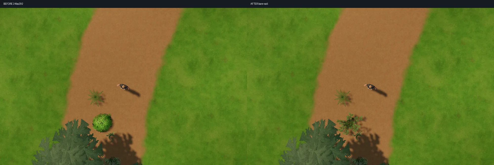
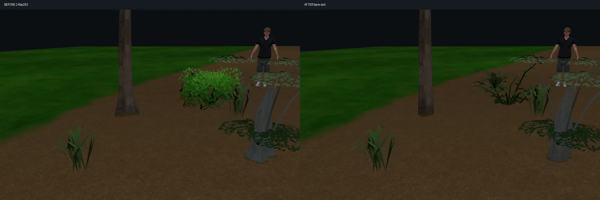

左：24ba292 ／ 右：今回。同じ実エディタ・配置・カメラ・照明で撮影。針葉樹の裾と法線、土の被覆判定、茂みの枝葉を調整しました。根元24種の三角形数は据え置き、茂みは76→479三角形・1材質です。
裸地・境界・縮尺を切り替える ／ 本体を開く




低い視点では幹と土の材質境界がまだ読め、葉の面も残ります。実時間の接触陰影・SSAOは追加していません。急斜面の接地は局所平面による近似です。スマホ実機の性能とゲーム本体統合は未検証です。